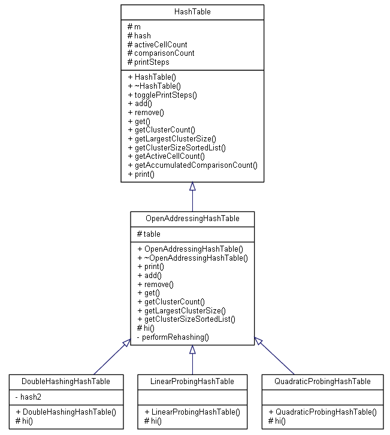
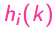

You are a wizard. You sell magic scrolls for a living.
You are also a computer wizard who are learning C++ programming. To keep an inventory of various magic scrolls you have in your shop, you have decided to build a system to keep track of it. It seems to be a very good use-case for hashing which you happen to have just learned in COMP2012. Nice! Before committing to building the full system, you would like to first test and compare different kinds of hashing and collision handling strategies, with the ultimate goal of making the system as efficient as possible in terms of various performance metrics. This is the assignment. With this, you shall have practices on hashing and various C++/OOP fundamentals.
In the description below, we will refer magic scrolls as simply magic.
Magic in this world is simple. They are named with a unique string that is always made up of exactly one prefix string and exactly one suffix string. The suffix string and the prefix string consist of only English alphabets. Their first characters must be a capital letter, while the others must be small letters.
The prefix describes the elemental nature of the magic. There are only 3 of them:
The suffix string can be a description of an object, an effect, or a phenomenon. There can be many of them. Here are some examples:
Combining them, here are some examples of magic:
Your system will basically have two functions. It can stock up magic (adding some quantity of it to the inventory with a price tag). It can also sell magic (removing some quantity of it, and also calculate the profit gained for your shop). The inventory system will use hashing for quick lookup of the magic. For simplicity, in this assignment, we only consider the following three collision handling strategies which are all in the open-addressing category: linear probing, quadratic probing, and double hashing. However, our design of the classes is made to be easily extensible if other collision handling strategies (e.g., separate chaining) are to be added later.
Respectable computer wizards should be careful with reading the manuals and description. So please do read all the description and examples carefully. :)
Read the FAQ page for some common clarifications. You should check that a day before the deadline to make sure you don't miss any clarification, even if you have already submitted your work then.
If you need further clarifications of the requirements, please feel free to post on the Piazza (via Canvas) with the pa4 tag. However, to avoid cluttering the forum with repeated/trivial questions, please do read all the given code, webpage description, sample output, and the latest FAQ (refresh this page regularly) carefully before posting your questions. Also, please be reminded that we won't debug any student's assignment for the sake of fairness.
Submission details are in the Submission and Deadline section.
Please download it now, as we will refer to it from time to time in the description below. Your task is to complete the missing implementation in the given skeleton code for 5 classes:
If you use VS Code, you may follow the creating a project and using the terminal for custom compilation command section on our VS Code usage tutorial. That is, create a folder to hold all the extracted files in your file explorer, then open this folder in VS Code. You can then use the terminal command g++ -std=c++11 -o programName *.cpp to compile all sources in the folder to the program. You are also welcome to create a Makefile for it yourself. After the compilation, you can then use the command ./programName OR .\programName (depends on the OS/shell you use) to run the program.
Here is a simple overview diagram which shows only the names of the hash table classes, data members, and member functions. We will explain in details all data their members and functions in the following sections.
Note: "#" denotes protected members; "+" denotes public members; "-" denotes private members; HashTable and OpenAddressingHashTable are abstract base classes.
Let's look at some useful structs first.
struct Magic
{
string prefix;
string suffix;
int price; //its price
int quantity; //its quantity in the inventory
};This represents a magic that you can sell in your shop. It is defined in the given magic.h file.
enum CellStatus
{
EMPTY, //empty cell
ACTIVE, //active cell
DELETED //deleted cell
};A hash table has many cells. This struct represents the status of a single cell. It is defined in the given hashTable.h file.
Initially, all cells in the table are EMPTY. When an item is put into the table, the cell used to store the item is then marked as ACTIVE. When an item is removed from the table, the cell used to store the item is then marked as DELETED. We use lazy deletion as described in the lecture notes. A DELETED cell may be used to store another magic later. We will talk about how a deletion should be performed later when we describe the remove function.
struct Cell
{
Magic* magic; //pointer to the magic
CellStatus status; //status of the cell
};This struct represents a single cell. It is also defined in the given hashTable.h file.
It is the top-level ABC for hash tables.
You may refer to the hashTable.h while you read this section.
hashTable.h is already complete. No modification should be made.
For this top-level ABC, there are not many concrete things to describe. It would seem to some of you that this class serves no purposes, but it is a useful design to have such a top-level abstract base should we decide to add other kinds of hash tables (e.g. a separate-chaining table) in the future. However, for simplicity, we only deal with the open-addressing ones for this assignment.
Data membersint m;It is the size of the hash table. Assume it is at least 3 when provided via a constructor. It should be updated whenever the size of the hash table changes due to rehashing.
int (*hash)(string, int);It is the function pointer pointing to the hash function hash(k, m). Assume it is always a valid function when provided via a constructor.
int activeCellCount;It is the count of active cells in the table. It should be 0 initially. It should be updated by you whenever changes are made to the table.
int comparisonCount;It is the number of accumulated comparisons performed for various operations. It should be updated by you. As to how, more details will be given later. It should be 0 initially.
bool printSteps;It is the flag to indicate whether to print detailed steps with cout for the add/remove/get operations. It should be false initially. We will give more details on what to print if this is true, when we talk about those 3 operations later. On the other hand, if this flag is false then you should not print anything at all for those 3 operations. You can see that in the given test cases - we have cases for both scenarios.
HashTable(int m, int (*hash)(string, int)) : m(m), hash(hash), activeCellCount(0), comparisonCount(0), printSteps(false) {}; It is the constructor.
virtual ~HashTable() = default;It is the destructor.
void togglePrintSteps() {printSteps = !printSteps;};It is used to toggle the printSteps flag.
virtual bool add(Magic* magic) = 0;virtual bool remove(string key) = 0;virtual Magic* get(string key) = 0;virtual int getClusterCount() const = 0;virtual int getLargestClusterSize() const = 0;virtual string getClusterSizeSortedList() const = 0;These are pure virtual functions. We will describe them later when we talk about how we should override them in a derived class.
int getActiveCellCount() const { return activeCellCount; };It returns the activeCellCount.
int getAccumulatedComparisonCount() const { return comparisonCount; };It returns the comparisonCount.
virtual void print() const = 0;It is a pure virtual function. We will describe it later when we talk about how we should override it in a derived class.
It is an ABC for open-addressing hash tables.
You may refer to the openAddressingHashTable.h while you read this section.
It is still an ABC, but it already overrides many functions of the HashTable that makes sense for all open-addressing hash tables in general.
Cell* table;It is the hash table of cells, which is a 1D dynamic array of static Cell objects.
virtual int hi(string k, int i) const = 0;It is the  function as shown in the notes (see page 20 for an example) that is used for hashing with collision resolving taken into account. Refer to the notes to see what k and i are. As it is different for different collision resolving strategies, it is logically made pure virtual. We will talk about its implementation when we describe the 3 sub-classes later.
OpenAddressingHashTable(int m, int (*hash)(string, int));It is the constructor. It should initialize the base class members, and create the hash table properly. Each cell initially should have their magic set to nullptr and status set to EMPTY.
~OpenAddressingHashTable();It is the destructor. You should delete the table, and all the magic stored inside.
void print() const override;It prints the hash table. Its implementation is given. It is your task to read and understand it yourself. We are not going to explain what it does for you. Please do it now before you proceed to reading the following description as we will use it to demonstrate various operations - the hash tables you see in the examples are simply generated by this function.
Note that we always use the magic suffix string as the key for this assignment. Whenever we say key, we mean the suffix string for the magic.
bool add(Magic* magic) override;Add the magic using its suffix as the key. Deep copy of the given magic should not be performed. That is, simple pointer assignment should be done when you add the magic to the corresponding cell.
Perform rehashing first if needed (to be described in the Hashing Example section) by calling the private function performRehashing which is to be implemented by yourself for this class as well.
You should record the number of comparisons needed to locate an available cell, namely C.
A comparison is defined as an operation that happens exactly once whenever you visit a cell for whatever. For example, for adding without any collision happening, it takes one comparison to locate an available cell (i.e., an EMPTY or DELETED cell) to add an item to it. Generally, if R collisions happen before an available cell is found, then C is simply R+1 (because one more comparison is needed to confirm/check that the available cell is actually available). Check the Hashing Example and the given test cases to better understand what a comparison is.
If the number of collisions is less than m, the addition is successful (i.e. we can find an EMPTY/DELETED cell to store the data with no more than m comparisons), so do the insertion, add C to comparisonCount, and return true. Otherwise, add m to comparisonCount and return false.
Assume all keys (i.e. the suffixes) provided in our test cases are unique.
bool remove(string key) override;Remove the entry, according to the given key, from the table.
We always perform lazy deletions. That is, we just need to set the cell status to DELETED. Also remember to deallocate the magic stored.
You should record the number of comparisons needed to locate the cell to remove, namely C.
Similar to add, if the number of collisions is less than m, the removal is successful, so do the removal, add C to comparisonCount, and return true.
(If you encounter an EMPTY cell early during your search, you should terminate the search early and return false immediately. In that case you don't need to wait for the number of collisions to reach m, and you should add the number of comparisons needed to reach the EMPTY cell to comparisonCount.)
Otherwise, add m to comparisonCount and return false.
Please study our examples later.
Magic* get(string key) override;Return the magic with the given key.
You should record the number of comparisons needed to locate the cell to retrieve, namely C.
Similar to add, if the number of collisions is less than m, the magic can be found, so add C to comparisonCount, and return the magic found.
(If you encounter an EMPTY cell early during your search, you should terminate the search early and return nullptr immediately. In that case you don't need to wait for the number of collisions to reach m, and you should add the number of comparisons needed to reach the EMPTY cell to comparisonCount.)
Otherwise, add m to comparisonCount and return nullptr.
Please study our examples later.
P.S. it is not a const member function because it has to update the comparisonCount.
int getClusterCount() const override;Return the number of clusters we have in the hash table.
For simplicity of this assignment, we only consider primary clustering which is mostly meaningful for linear-probing insertion.
In this assignment, a cluster is always simply defined as a set of consecutive ACTIVE cells in the table. Examples will be given when we describe getClusterSizeSortedList soon.
int getLargestClusterSize() const override;Return the size of the largest cluster. Just return 0 if there is no cluster at all (i.e. all cells are EMPTY or DELETED). Examples will be given when we describe getClusterSizeSortedList next.
string getClusterSizeSortedList() const override;Return a comma-delimited list of cluster sizes that are sorted descendingly.
Example 0:
0: [Empty] | 1: [Empty] | 2: [Empty] | 3: [Empty] | 4: [Empty] | 5: [Empty]has 0 cluster. Size of the largest cluster is considered as 0. The
getClusterSizeSortedList function should return simply "(empty)" which has no extra spaces and no newlines in it.
Example 1:
0: [Empty] | 1: [Active](key=Ball;hash=1;name=FireBall;price=$100;quantity=1) | 2: [EMPTY] | 3: [Active](key=Storm;hash=3;name=FireStorm;price=$200;quantity=2) | 4: [Active](key=Rain;hash=4;name=FireRain;price=$300;quantity=3) | 5: [Empty]has 2 clusters. The first cluster spans cell 1 only, so its size is 1. The second cluster spans cells 3 and 4, so its size is 2. Therefore the largest cluster is the second cluster with a size of 2. The
getClusterSizeSortedList function should return "2,1" which has no extra spaces and no newlines in it.
Friendly reminder: if you are using input methods that have full-width characters (such as some Chinese input methods), you should make sure the comma you output is a simple English comma "," which is different from some Chinese/full-width comma.
Example 2:
0: [Empty] | 1: [Active](key=Ball;hash=1;name=FireBall;price=$100;quantity=1) | 2: [Active](key=Storm;hash=2;name=FireStorm;price=$200;quantity=2) | 3: [Deleted] | 4: [Active](key=Rain;hash=4;name=FireRain;price=$300;quantity=3) | 5: [Empty]has 2 clusters. The first cluster spans cells 1 and 2, so its size is 2. The second cluster spans cell 4 only, so its size is 1. Therefore the largest cluster is the first cluster with a size of 2. The
getClusterSizeSortedList function should return "2,1" which has no extra spaces and no newlines in it.
Example 3:
0: [Active](key=Storm;hash=0;name=FireStorm;price=$200;quantity=2) | 1: [Active](key=Ox;hash=1;name=FireOx;price=$200;quantity=2) | 2: [Active](key=Cow;hash=2;name=FireCow;price=$200;quantity=2) | 3: [Empty] | 4: [Active](key=Rain;hash=4;name=FireRain;price=$300;quantity=3) | 5: [Active](key=Dog;hash=5;name=FireDog;price=$300;quantity=3)has only 1 cluster of size 5, spanning cells 4, 5, 0, 1, and 2. Notice for probing purposes, we can "wrap around" the table, hence the last cell is actually connected to the first cell. You can consider the table as a circular array. Therefore, these are NOT two clusters. (4, 5) and (0, 1, 2) are actually connected as one big cluster. The
getClusterSizeSortedList function should return "5" which has no extra spaces and no newlines in it.
void performRehashing(); Perform rehashing. It is just a private function that should be called by yourself when rehashing needs to be performed during add.
It is an open-addressing hash table with linear probing collision handling.
You may refer to the linearProbingHashTable.h while you read this section.
Member functions
LinearProbingHashTable(int m, int (*hash)(string, int));It is the constructor. It should initialize the base class members.
int hi(string k, int i) const override;It is the implementation of the function for linear probing. See page 21 of the notes.
It is an open-addressing hash table with quadratic probing collision handling.
You may refer to the quadraticProbingHashTable.h while you read this section.
Member functions
QuadraticProbingHashTable(int m, int (*hash)(string, int));It is the constructor. It should initialize the base class members.
int hi(string k, int i) const override;It is the implementation of the function for quadratic probing. See page 24 of the notes.
It is an open-addressing hash table with double hashing collision handling.
You may refer to the doubleHashingHashTable.h while you read this section.
Data membersint (*hash2)(string, int);It is the function pointer pointing to the hash2 function hash2(k, m). See page 27 of the notes.
Note that in some of our test cases, we may not always follow all good practices for the hash/hash2 function design (e.g. page 29 of the notes) in order to have more collisions/failures to test edge cases easily.
DoubleHashingHashTable(int m, int (*hash)(string, int), int (*hash2)(string, int));It is the constructor. It should initialize the base class members. It should also initialize hash2.
int hi(string k, int i) const override;It is the implementation of the function for double hashing. See page 27 of the notes.
In the following example, we have set the printSteps flag to true, so that you can see all the details and learn what to print for the 3 operations: add, remove, and get.
You can also find the exact code used for this example in the first 9 test cases we gave to you. Please read them also.
Suppose we have a linear-probing hash table with m = 3, and a hash function int (*hash)(string, int) = [](string s, int m) {return (int)s.length() % m; } which basically takes the string length of the input string and does mod m on it. The table will be empty at the beginning. hashTable->print() will print this table (assume hashTable points to our hash table):
0: [Empty] | 1: [Empty] | 2: [Empty]
We would also call togglePrintSteps once to enable the printing of the steps. Your program should also print those steps exactly when that option is on (on the other hand, don't print anything yourself during add/remove/get when that option is off).
We will be using the magic suffix as the key, as mentioned.
First, we add new Magic{"Fire", "Ball", 100, 10} (key is "Ball" then) to it. Since the hash of the key is 4%3=1, it will be added to the cell 1.
The add function will print 2 lines (for all printing, there is no extra space at the front or the end of each line; and each line will end with exactly one endl):
hash("Ball") = 1
FireBall added at cell 1
It always prints the hash value of the key in the first line in this exact format and spacing. Then it will print all the steps involved. Since there is no collision, there is one step (i.e. one comparison) only and that is simply a successful add at cell 1.
Our table becomes:
0: [Empty] | 1: [Active](key=Ball;hash=1;name=FireBall;price=$100;quantity=10) | 2: [Empty]
When a magic cannot be added successfully, you may print "X cannot be added" where X is the full name (i.e. prefix+suffix) of the magic, please refer to some of our given test cases for examples to see what to print exactly in that situation. It is quite simple, but you should check for yourself.
Let's also print the various statistics with function calls like this:
cout << "Active cell count = " << hashTable->getActiveCellCount() << endl;
cout << "Accumulated comparison count = " << hashTable->getAccumulatedComparisonCount() << endl;
cout << "Cluster count = " << hashTable->getClusterCount() << endl;
cout << "Largest cluster size = " << hashTable->getLargestClusterSize() << endl;
cout << "Cluster size list = " << hashTable->getClusterSizeSortedList() << endl;The statistics printed would be:
Active cell count = 1 Accumulated comparison count = 1 Cluster count = 1 Largest cluster size = 1 Cluster size list = 1
Next we add new Magic{"Fire", "Wind", 200, 20} (key is "Wind" then) to it. Since the hash of the key is 4%3=1, there is actually one collision. The add function should print these 3 lines:
hash("Wind") = 1
FireWind collided at cell 1
FireWind added at cell 2
The table and statistics become:
0: [Empty] | 1: [Active](key=Ball;hash=1;name=FireBall;price=$100;quantity=10) | 2: [Active](key=Wind;hash=1;name=FireWind;price=$200;quantity=20) Active cell count = 2 Accumulated comparison count = 3 Cluster count = 1 Largest cluster size = 2 Cluster size list = 2
If we add another magic now, rehashing will happen. Let's see what that is first, then we continue with the example.
RehashingFor this assignment, rehashing should be performed when the number of active cells is more than half of the hash table size, before adding the new item.
To perform rehashing, you need to take out all the items, double the size of the hash table (in practice, we should find a nearby prime number instead, but for this assignment we don't worry about that to make your life easier :)), and insert the items back to the expanded table. The cell statuses of the cells in the expanded table will be either ACTIVE or EMPTY.
The insertion order of the items to the new table is the same as their appearance order in the old/original table Cell array. So start with adding the old table[0] to the new table, then table[1], then table[2], and so on.
For simplicity, you may assume the addition of items back to the expanded table will always be successful.
Now we continue with the example. Let's add new Magic{"Fire", "Storm", 300, 30} (key is "Storm" then) to it. Since, before adding the new item, we currently have 2 items in the table, and that is more than half of the table size. Rehashing has to be preformed. The add output should be exactly these 10 lines:
hash("Storm") = 2
Rehashing is needed!
hash("Ball") = 4
FireBall added at cell 4
hash("Wind") = 4
FireWind collided at cell 4
FireWind added at cell 5
Rehashing is done!
FireStorm collided at cell 5
FireStorm added at cell 0
Notice when rehashing is needed, it prints "Rehashing is needed!" in the second line then perform the rehashing which prints the next 5 lines (which show 3 steps/comparisons, for adding the 2 old items back to the expanded table). Then "Rehashing is done!" should be printed. Finally, print all the steps needed to add the new item. In this example, actually adding the new item needs 2 more steps/comparisons. There are 5 steps/comparisons needed in total - that should be accumulated to comparisonCount as usual. Let's see the table and statistics:
0: [Active](key=Storm;hash=5;name=FireStorm;price=$300;quantity=30) | 1: [Empty] | 2: [Empty] | 3: [Empty] | 4: [Active](key=Ball;hash=4;name=FireBall;price=$100;quantity=10) | 5: [Active](key=Wind;hash=4;name=FireWind;price=$200;quantity=20) Active cell count = 3 Accumulated comparison count = 8 Cluster count = 1 Largest cluster size = 3 Cluster size list = 3
Now we add new Magic{"Fire", "Ox", 400, 40}.
hash("Ox") = 2
FireOx added at cell 2
The table and statistics become:
0: [Active](key=Storm;hash=5;name=FireStorm;price=$300;quantity=30) | 1: [Empty] | 2: [Active](key=Ox;hash=2;name=FireOx;price=$400;quantity=40) | 3: [Empty] | 4: [Active](key=Ball;hash=4;name=FireBall;price=$100;quantity=10) | 5: [Active](key=Wind;hash=4;name=FireWind;price=$200;quantity=20) Active cell count = 4 Accumulated comparison count = 9 Cluster count = 2 Largest cluster size = 3 Cluster size list = 3,1
Let's try removing a magic from the table. We will call the remove function with the key "Void" which is not even in the table. The following 6 lines should be printed exactly like this:
hash("Void") = 4
visited cell 4 but could not find it
visited cell 5 but could not find it
visited cell 0 but could not find it
visited cell 1 but could not find it
Void cannot be removed
Just like add, we always print the hash value in the first line. Then we will print 1 or more lines to indicate all the steps involved. The removal fails as we encounter an EMPTY cell at cell 1 during our search. We have to terminate our search early before reaching 6 collisions (which is another sufficient stopping criteria, when no EMPTY cell is encountered first). Notice that only 4 collisions have actually happened before we could confirm the failure of the removal as an EMPTY cell has been encountered. We should print "Void cannot be removed" at the end.
The table (no change) and statistics become:
0: [Active](key=Storm;hash=5;name=FireStorm;price=$300;quantity=30) | 1: [Empty] | 2: [Active](key=Ox;hash=2;name=FireOx;price=$400;quantity=40) | 3: [Empty] | 4: [Active](key=Ball;hash=4;name=FireBall;price=$100;quantity=10) | 5: [Active](key=Wind;hash=4;name=FireWind;price=$200;quantity=20) Active cell count = 4 Accumulated comparison count = 13 Cluster count = 2 Largest cluster size = 3 Cluster size list = 3,1
Next, let's call the remove function with the key "Ball" instead. The following 2 lines should be printed exactly like this:
hash("Ball") = 4
FireBall removed at cell 4
The table and statistics become:
0: [Active](key=Storm;hash=5;name=FireStorm;price=$300;quantity=30) | 1: [Empty] | 2: [Active](key=Ox;hash=2;name=FireOx;price=$400;quantity=40) | 3: [Empty] | 4: [Deleted] | 5: [Active](key=Wind;hash=4;name=FireWind;price=$200;quantity=20) Active cell count = 3 Accumulated comparison count = 14 Cluster count = 2 Largest cluster size = 2 Cluster size list = 2,1
Finally, let's try get. We attempt to get with key "Void" which is not even in the table. The following 6 lines should be printed exactly like this:
hash("Void") = 4
visited cell 4 but could not find it
visited cell 5 but could not find it
visited cell 0 but could not find it
visited cell 1 but could not find it
Void cannot be found
The table (no change) and statistics become:
0: [Active](key=Storm;hash=5;name=FireStorm;price=$300;quantity=30) | 1: [Empty] | 2: [Active](key=Ox;hash=2;name=FireOx;price=$400;quantity=40) | 3: [Empty] | 4: [Deleted] | 5: [Active](key=Wind;hash=4;name=FireWind;price=$200;quantity=20) Active cell count = 3 Accumulated comparison count = 18 Cluster count = 2 Largest cluster size = 2 Cluster size list = 2,1
Then get with key "Wind" instead. The following 3 lines should be printed exactly like this:
hash("Wind") = 4
visited cell 4 but could not find it
FireWind found at cell 5
The table (no change) and statistics become:
0: [Active](key=Storm;hash=5;name=FireStorm;price=$300;quantity=30) | 1: [Empty] | 2: [Active](key=Ox;hash=2;name=FireOx;price=$400;quantity=40) | 3: [Empty] | 4: [Deleted] | 5: [Active](key=Wind;hash=4;name=FireWind;price=$200;quantity=20) Active cell count = 3 Accumulated comparison count = 20 Cluster count = 2 Largest cluster size = 2 Cluster size list = 2,1
It models a shop that makes use of hashing tables to keep its inventory. It only has two simple functions: to stock up magic, and to sell magic for profit.
It has 3 hashing tables - one for each of the 3 elements (fire, ice, lightning). Magic will always be kept in one of the 3 tables according to its element prefix.
You may refer to the shop.h while you read this section.
Data members
int profit;It is used to record the accumulated profit for the shop. It should be set to 0 initially. It is only updated whenever a magic is sold.
HashTable* fireTable;It is the table for storing Fire magic. You do not create it yourself in this class. You let the caller of the Shop constructor to create it and then pass it in, and simply have this pointer point to that (shallow copy).
It always uses the suffix of the magic as the key. For example, magic of the name "FireBall" will be stored in this table with key "Ball".
HashTable* iceTable;Same as above, but this one is for ice magic.
HashTable* lightningTable;Same as above, but this one is for lightning magic.
Shop(HashTable* fireTable, HashTable* iceTable, HashTable* lightningTable);It is the constructor. See the data members section to learn how to initialize all 4 of them.
~Shop();It is the destructor. While the 3 tables are created outside, you should delete them here.
HashTable* getTable(string prefix) const;
It returns one of the 3 hash tables according to the given prefix. It is just a private function that may be called by yourself when you want to get the table according to the prefix. You may want to call it in the stockUp and sell functions.
bool stockUp(string name, int quantity, int price) const; Given the magic's name (note that it is the full name, i.e., prefix+suffix like "FireBall"), quantity, and price, add it to our inventory.
If the inventory already has this magic (magic with the same suffix in the corresponding table), then simply increase the current quantity of this magic in the table, by the specified quantity. If the provided price is different from the current price, just update the price to this new price.
If the inventory doesn't already have this magic, then we need to add it to the corresponding hash table (e.g. fire magic must go to the fire table) using only the suffix as the key (e.g. use "Ball" as the key for "FireBall").
The function only fails and returns false, when calling add on the corresponding table returns false. It is successful in all other cases, and returns true. E.g. assume no overflow would happen when you increase the quantity of a current magic.
Also assume the given quantity and price are positive.
bool sell(string name, int quantity);Remove quantity of the magic with name (note that it is the full name, i.e., prefix+suffix like "FireBall") from our inventory.
If the magic cannot be found from the inventory (i.e. get on the corresponding table returns false), just return false.
There may be some extreme cases where remove returns false but the magic is actually there, you don't have to worry about those - just trust what remove returns.
If the inventory has this magic, check if there is enough stock to remove. If there is enough current stock, remove quantity from it, increase data member profit by the removed quantity multiplied by the magic's current price, and return true. If current stock is less than quantity, do nothing and return false.
Additionally, make sure that the magic is removed from the hash table when its quantity reaches 0. (by calling remove of the hash table for it)
Assume the given quantity is positive.
To get the same accumulated comparison count as the expected output, you should do the following:
get of the involved hash table (according to the prefix of the magic) should be called exactly once. get of the involved hash table should be called exactly once. get and remove of the involved hash table should be called exactly once. void print() const;It prints the shop profit and the inventory (all 3 tables, one by one). Its implementation is given. It is your task to read and understand it yourself. We are not going to explain what it does for you.
Your finished program should produce the same output as our sample output (updated at 16:25pm on Apr 28th, see FAQ) for all given test cases. User input, if any, is omitted in the files. Please note that sample output, naturally, does not show all possible cases. It is part of the assessment for you to design your own test cases to test your program. Be reminded to remove any debugging message that you might have added before submitting your code.
There are 67 given test cases of which the code can be found in the given main.cpp file. These 67 test cases are first run without any memory leak checking (they are numbered #1 - #67 on ZINC). Then, the same 67 test cases will be run again, in the same order, with memory leak checking (those will be numbered #68 - #134 on ZINC). For example, test case #70 on ZINC is actually the given test case 2 (in the given main function) run with memory leak checking.
Each of the test cases run without memory leak checking (i.e., #1 - #67 on ZINC) is worth 1 mark. The second run of each test case with memory leak checking (i.e., #68 - #134 on ZINC) is worth 0.25 mark. The maximum score you can get on ZINC, before the deadline, will therefore be 67*(1+0.25) = 83.75.
About memory leak and other potential errorsMemory leak checking is done via the -fsanitize=address,leak,undefined option (related documentation here) of a recent g++ compiler on Linux (it won't work on Windows for the versions we have tested). Check the "Errors" tab (next to "Your Output" tab in the test case details popup) for errors such as memory leak. Other errors/bugs such as out-of-bounds, use-after-free bugs, and some undefined-behavior-related bugs may also be detected. You will get 0 mark for the test case if there is any error there. Note that if your program has no errors detected by the sanitizers, then the "Errors" tab may not appear. If you wish to check for memory leak yourself using the same options, you may follow our Checking for memory leak yourself guide.
We will have 34 additional test cases which won't be revealed to you before the deadline. Together with the 34 given test cases, there will then be 101 test cases used to give you the final assignment grade. All 101 test cases will be run two times as well: once without memory leak checking and once with memory leak checking. Note that, for this assignment, we will give a higher score weighting to the hidden test cases. The weighting will be determined later but all the hidden cases combined will definitely weight more than all the given ones combined. Additionally, if we found you had hardcoded your solution for the inputs in the given cases, penalty would be applied. Details will be provided in the marking scheme which will be released after the deadline.
Deadline: 23:59:00 on May 10th, 2022 (Tuesday)
Please zip and submit the following 5 files.
Notes:
If you see a blank page or some errors after some action on ZINC, you may try refreshing the page and repeating the action again, and it usually will work the second / third time. If it still doesn't work, try using another browser / private window. Please also email the details about the bug you encountered (potentially with a screenshot if that is helpful) to zinc@cse.ust.hk and they will try to fix the bug as soon as possible.
Again, it is not unusual that reports may not be generated until hours later when deadline approaches. When the ZINC cannot give you the grading report quickly, please test your program on your own computer, and you may compare your output with the sample output we provided on the PA webpage yourself. Please do NOT resubmit the same file again and again, as it will lag the server and wont make it give you the report faster.
While you may not get the grading report quickly, as long as your submission is successful (the grading part and submission collection part are working separately on ZINC, and the submission collection part is usually responsive and stable), we would grade your latest submission with all test cases after the deadline, so dont worry too much.
If testing on a Linux machine (on which ZINC is operating) is needed for some reason, you may refer to previous section for instructions on remote-accessing a Linux lab machine. It is not exactly the ZINC server, but it is close in many scenarios, meaning you may be able to reproduce the crash/problems there.
It is required that your submissions can be compiled and run successfully in our online auto-grader ZINC. If we cannot even compile your work, it won't be graded. Therefore, for parts that you cannot finish, just put in dummy implementation so that your whole program can be compiled for ZINC to grade the other parts that you have done. Empty implementations can be like:
int SomeClass::SomeFunctionICannotFinishRightNow()
{
return 0;
}
void SomeClass::SomeFunctionICannotFinishRightNowButIWantOtherPartsGraded()
{
}
There will be a penalty of -1 point (out of a maximum 100 points) for every minute you are late. For instance, since the deadline of the assignment is 23:59:00 on May 10th, if you submit your solution at 1:00:00 on May 11th, there will be a penalty of -61 points for your assignment. However, the lowest grade you may get from an assignment is zero: any negative score after the deduction due to a late penalty (and any other penalties) will be reset to zero.
Q: My code doesn't work / there is an error, here is the code, can you help me fix it?
A: As the assignment is a major course assessment, to be fair, you are supposed to work on it on your own and we should not finish the tasks for you. We might provide some very general hints to you, but we shall not fix the problem or debug for you.
Q: Can I add extra helper functions?
A: You may do so in the files that you are allowed to modify and submit. That implies you cannot add new member functions to any given class.
Q: Can I include additional libraries?
A: No. Everything you need is already included - there is no need for you to add any include statement (under our official environment).
Q: Can I use global variable or static variable such as "static int x"?
A: No.
Q: Can I use "auto"?
A: No.
Q: Can I use "goto"?
A: No.
Q: Can I use function X or class Y in this assignment?
A: In general if it is not forbidden in the description and the previous FAQs, and you can use it without including any additional library on ZINC, then you can use it. We suggest quickly testing it on ZINC (to see if a basic usage of it compiles there) before committing to using it as library inclusion requirement may differ on different environments.
Q: My program gives the correct output on my computer, but it gives a different one on ZINC. What may be the cause?
A: Usually inconsistent strange result (on different machines/platforms, or even different runs on the same machine) is due to relying on uninitialized hence garbage values, missing return statements, accessing out-of-bound array elements, improper use of dynamic memory, or relying on library functions that might be implemented differently on different platforms (such as pow() in cmath).
You may find a list of common causes and tips on debugging in the notes here.
In this particular PA, it is probably related to misuse of dynamic memory. Good luck with bug hunting!
Q: Can I use a variabe as the size of a static array?
A: No. Per the official C++ standard, which our course follows, a static array size must be a constant expression. It is an unofficial feature supported by some compiler extensions. On ZINC, we have added a compilation flag "-Werror=vla" to g++ so that violating this standard will trigger a compilation error. If you need a variable-sized array, please use dynamic arrays.
Q: Should we stop at the first EMPTY cell we find during get and remove operations? In other words, finding an EMPTY cell should be one of the stopping criteria (early termination), right?
A: Yes. There was a mistake in the description and sample output which has been fixed at 16:25pm on Apr 28th, as announced on Canvas. Sorry about that. For details, we have bolded the updated/additional description in the description of the add and remove functions, as well as the Hashing example section for you to see the update clearly.
Q: Is there anything to print with cout when the addition fails?
A: There is a given test case for that. Please study the given main.cpp file and the corresponding sample output. In general, the detailed examples on this webpage and the given test cases should be sufficient for you to infer what to print in each situation. You should study them to verify / help with your own understanding of the requirements.
Q: In the case where we encounter an EMPTY cell during the get and remove operations, how many comparisons/steps should we add to the "accumulated comparison count"?
A: You just need to add to it the number of comparisons needed to reach the EMPTY cell. You can find an example of it in the Hashing example section. We just added this clarification to the function description for get and remove to make it clearer at 11:50am on Apr 29th.
Q: For stockUp, how many get and add function calls should be made to arrive at the same "accumulated comparison count" as the expected output?
A: It is basically the minimal number of operations required. You can follow this guideline:
get should always be called exactly once in all scenarios. add exactly once when the item needs to be added to the table.Q: For add, can I assume magic won't be a nullptr?
A: Yes.
Q: For stockUp, can I assume the given magic name is valid? For example, its prefix must be "Fire", "Ice", and "Lightning", right?
A: Yes. In general you can assume all inputs are valid.
Q: For performRehashing, what should we do to the DELETED cells?
A: Since the whole point of rehashing is to "start over" with a bigger table in a sense. You should just ignore the DELETED cells, and only add the ACTIVE cells back to the new table, you won't have any DELETED cell left after the expansion as a result.
Q: For get and remove, what should we do when we encounter a DELETED cell?
A: See this post.
Q: For add, it seems that it is impossible to return false if we perform rehashing to enlarge the table whenever there is not enough space?
A: It is possible if the hash function is bad where some cells may be visited more than 1 time. You can refer to one of the given test cases where the addition fails. Again, please do read the example and study the given test cases.